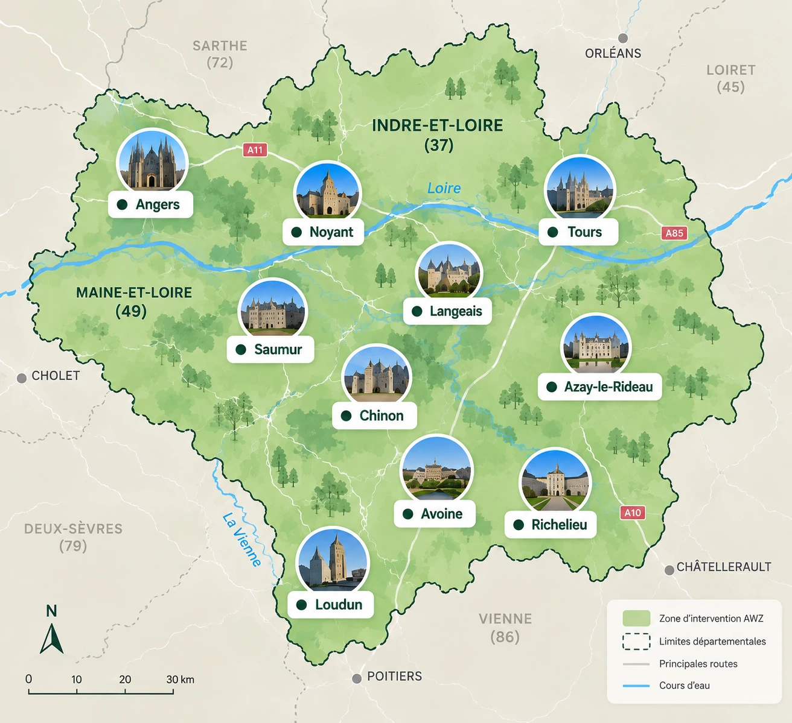

Zones d’intervention
Proche de vos projets,
au cœur de notre région
Basée à Avoine, AWZ-Rénovation intervient en Indre-et-Loire, Maine-et-Loire et Vienne pour vos travaux de maçonnerie, rénovation, façades, pierre et tuffeau.
Intervention rapide
Devis gratuit
Assurance décennale

AvoineVilles desservies Carte interactive


Votre projet
Un chantier dans notre secteur ?
Parlez-nous de vos travaux : nous vous répondrons rapidement pour organiser la suite.